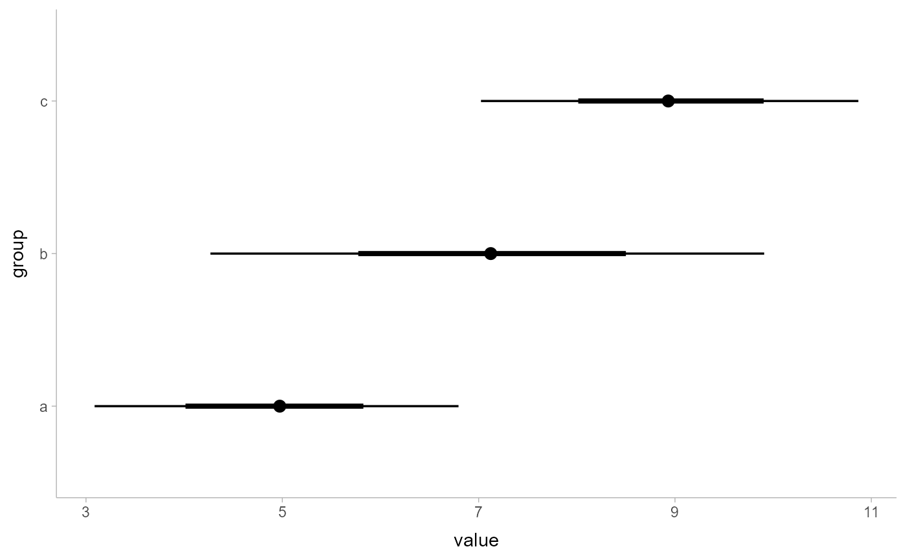
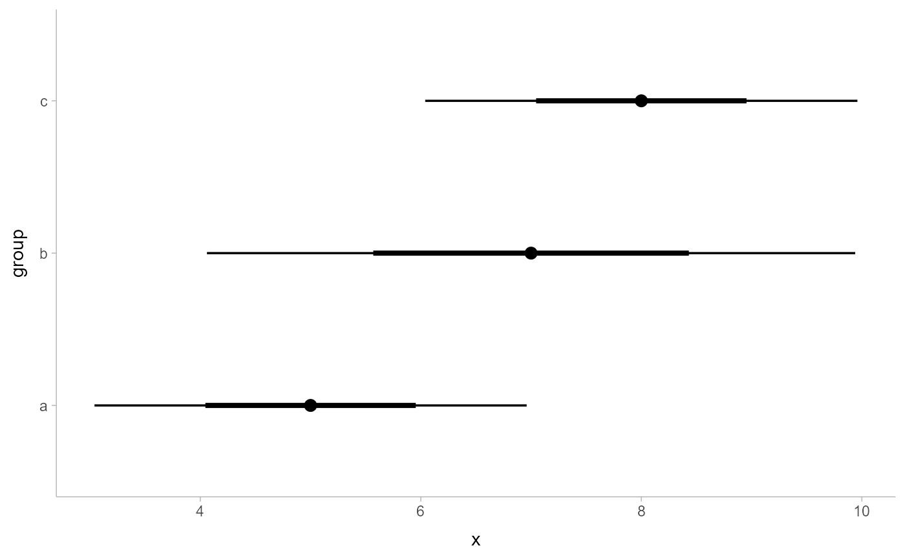

R/stat_pointinterval.R, R/stat_pointintervalh.R
stat_pointinterval.RdA combination of stat_summary / stat_summaryh and
geom_pointinterval / geom_pointintervalh with sensible defaults.
While the corresponding geoms are intended for use on
data frames that have already been summarized using a point_interval
function, these stats are intended for use directly on data frames of draws, and
will perform the summarization using a point_interval function.
stat_pointinterval(mapping = NULL, data = NULL, geom = "pointinterval", position = "identity", ..., point_interval = median_qi, fun.data = NULL, .width = c(0.66, 0.95), .prob, fun.args = list(), na.rm = FALSE, show.legend = FALSE, inherit.aes = TRUE) stat_pointintervalh(mapping = NULL, data = NULL, geom = "pointintervalh", position = "identity", ..., point_interval = median_qi, fun.data = NULL, .width = c(0.66, 0.95), .prob, fun.args = list(), na.rm = FALSE, show.legend = FALSE, inherit.aes = TRUE)
| mapping | The aesthetic mapping, usually constructed with
|
|---|---|
| data | A layer specific dataset - only needed if you want to override the plot defaults. |
| geom | Use to override the default connection between
|
| position | The position adjustment to use for overlapping points on this layer. |
| ... | Other arguments passed to |
| point_interval | A function that when given a vector should
return a data frame with variables |
| fun.data | Similar to |
| .width | The |
| .prob | Deprecated. Use |
| fun.args | Other optional arguments passed to |
| na.rm | If |
| show.legend | Should this later be included in the legends? Default is |
| inherit.aes | If |
See geom_pointinterval / geom_pointintervalh for the geom versions, intended
for use on points and intervals that have already been summarized using a point_interval function.
See stat_interval / stat_intervalh for a similar stat intended for intervals without
point summaries.
library(magrittr) library(ggplot2) data(RankCorr, package = "tidybayes") RankCorr %>% spread_draws(u_tau[i]) %>% ggplot(aes(y = i, x = u_tau)) + stat_pointintervalh(.width = c(.66, .95))RankCorr %>% spread_draws(u_tau[i]) %>% ggplot(aes(x = i, y = u_tau)) + stat_pointinterval(.width = c(.66, .95))